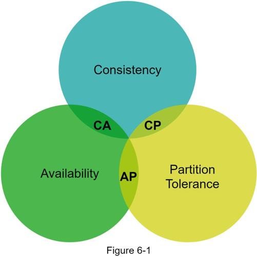
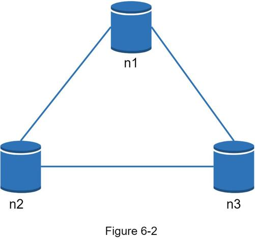
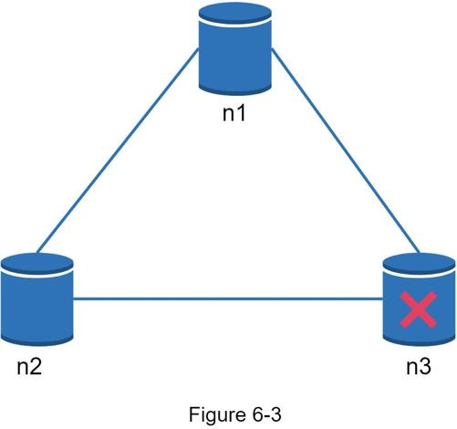
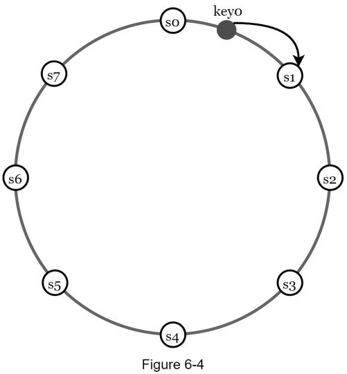
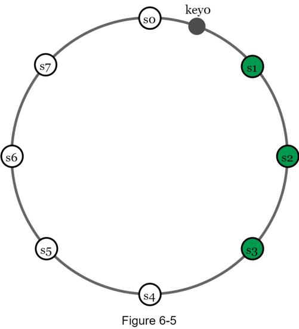

A distributed key-value store is also called a distributed hash table, which distributes key-value pairs across many servers. When designing a distributed system, it is important to understand CAP (Consistency, Availability, Partition Tolerance) theorem.
CAP theorem states it is impossible for a distributed system to simultaneously provide more than two of these three guarantees: consistency, availability, and partition tolerance. Let us establish a few definitions.
Consistency: consistency means all clients see the same data at the same time no matter which node they connect to.
Availability: availability means any client which requests data gets a response even if some of the nodes are down.
Partition Tolerance: a partition indicates a communication break between two nodes. Partition tolerance means the system continues to operate despite network partitions.
CAP theorem states that one of the three properties must be sacrificed to support 2 of the 3 properties as shown in Figure 6-1.

Nowadays, key-value stores are classified based on the two CAP characteristics they support:
CP (consistency and partition tolerance) systems: a CP key-value store supports consistency and partition tolerance while sacrificing availability.
AP (availability and partition tolerance) systems: an AP key-value store supports availability and partition tolerance while sacrificing consistency.
CA (consistency and availability) systems: a CA key-value store supports consistency and availability while sacrificing partition tolerance. Since network failure is unavoidable, a distributed system must tolerate network partition. Thus, a CA system cannot exist in real-world applications.
What you read above is mostly the definition part. To make it easier to understand, let us take a look at some concrete examples. In distributed systems, data is usually replicated multiple times. Assume data are replicated on three replica nodes, n1, n2 and n3 as shown in Figure 6-2.
Ideal situation
In the ideal world, network partition never occurs. Data written to n1 is automatically replicated to n2 and n3. Both consistency and availability are achieved.

Real-world distributed systems
In a distributed system, partitions cannot be avoided, and when a partition occurs, we must choose between consistency and availability. In Figure 6-3, n3 goes down and cannot communicate with n1 and n2. If clients write data to n1 or n2, data cannot be propagated to n3. If data is written to n3 but not propagated to n1 and n2 yet, n1 and n2 would have stale data.

If we choose consistency over availability (CP system), we must block all write operations to n1 and n2 to avoid data inconsistency among these three servers, which makes the system unavailable. Bank systems usually have extremely high consistent requirements. For example, it is crucial for a bank system to display the most up-to-date balance info. If inconsistency occurs due to a network partition, the bank system returns an error before the inconsistency is resolved.
However, if we choose availability over consistency (AP system), the system keeps accepting reads, even though it might return stale data. For writes, n1 and n2 will keep accepting writes, and data will be synced to n3 when the network partition is resolved.
Choosing the right CAP guarantees that fit your use case is an important step in building a distributed key-value store. You can discuss this with your interviewer and design the system accordingly.
In this section, we will discuss the following core components and techniques used to build a key-value store:
•Data partition
•Data replication
•Consistency
•Inconsistency resolution
•Handling failures
•System architecture diagram
•Write path
•Read path
The content below is largely based on three popular key-value store systems: Dynamo [4], Cassandra [5], and BigTable [6].
For large applications, it is infeasible to fit the complete data set in a single server. The simplest way to accomplish this is to split the data into smaller partitions and store them in multiple servers. There are two challenges while partitioning the data:
•Distribute data across multiple servers evenly.
•Minimize data movement when nodes are added or removed.
Consistent hashing discussed in Chapter 5 is a great technique to solve these problems. Let us revisit how consistent hashing works at a high-level.
•First, servers are placed on a hash ring. In Figure 6-4, eight servers, represented by s0, s1, …, s7, are placed on the hash ring.
•Next, a key is hashed onto the same ring, and it is stored on the first server encountered while moving in the clockwise direction. For instance, key0 is stored in s1 using this logic.

Using consistent hashing to partition data has the following advantages:
Automatic scaling: servers could be added and removed automatically depending on the load.
Heterogeneity: the number of virtual nodes for a server is proportional to the server capacity. For example, servers with higher capacity are assigned with more virtual nodes.
To achieve high availability and reliability, data must be replicated asynchronously over N servers, where N is a configurable parameter. These N servers are chosen using the following logic: after a key is mapped to a position on the hash ring, walk clockwise from that position and choose the first N servers on the ring to store data copies. In Figure 6-5 (N = 3), key0 is replicated at s1, s2, and s3.

With virtual nodes, the first N nodes on the ring may be owned by fewer than N physical servers. To avoid this issue, we only choose unique servers while performing the clockwise walk logic.
Nodes in the same data center often fail at the same time due to power outages, network issues, natural disasters, etc. For better reliability, replicas are placed in distinct data centers, and data centers are connected through high-speed networks.